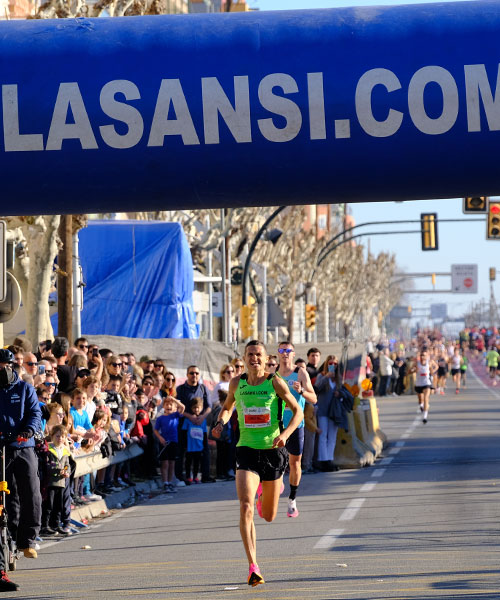
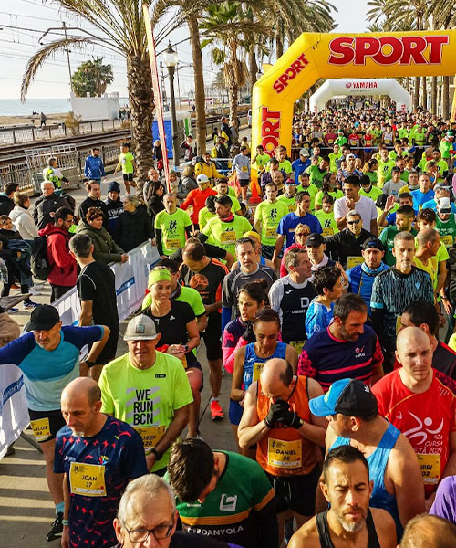

Esports
Les de Nadal són festes d'excessos que la pràctica esportiva pot ajudar a equilibrar. Nedant a contra corrent en aigües obertes, arrissant el patí sobre el gel o gastant sabatilles esportives per Sant Silvestre conformen maneres molt variades de superar amb nota les sobretaules.

En forma

Una pista de gel ideal per gaudir patinant amb els més petits de la família. A Sant Fruitós de Bages, un poble d'origen medieval que actualment consolida la seva expansió demogràfica gràcies a l'arribada de famílies joves que s'instal·len als pisos i habitatges unifamiliars que s'hi construeixen.

La Sansi és la tercera Cursa de Cap d'Any amb més participants de Catalunya. Comença a les 10,30 h a un circuit de 5km i un límit de 1.800 inscrits. La cursa infantil començarà a les 11,15 h. Aquest any La Sansi no distingirà entre homes i dones. Totes les persones correran juntes.

Travessia de natació de 1.500 metres a la platja del Varador de Mataró que s'organitza des de l'any 2012. Cal inscripció prèvia i costa entre 25 i 27€ per inscrit. A l'esdeveniment col·labora el Centre Natació Mataró.

El 29 de desembre els badalonins i badalonines participaran massivament, com passa sempre, en aquesta cursa de 10K o 5K per acomiadar l'any. El circuit discorre pel centre de la ciutat. L'organització admet corredors disfressats i organitza un concurs individual o en comparsa.

Calella convoca per al dia de Nadal la tradicional 'banyada' col·lectiva, una iniciativa amb 27 anys d'història. La Colla No Tinc Fred continuarà reunint les persones més valentes del municipi, disposades a repetir una gran experiència esportiva i cívica.